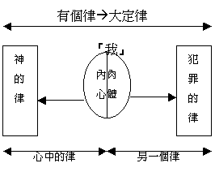

|
超卓的救恩 |
|||||||
|
引言 |
範圍 |
途徑 |
果效 |
盼望 |
讚嘆 |
生活 |
結語 |
|
1:1-17 |
1:18-3:20 |
3:21-4:25 |
5:1-8:17 |
8:18-11:32 |
11:33-36 |
12:1-15:13 |
15:14-16:27 |
三.超卓的果效(5:1-8:17)
1.歡歡喜喜的人生(5:1-11)
2.跨越罪權的生命(5:12-8:17)
A.扭轉歷史的包袱(5:12-21)
B.得勝罪惡的權勢(6:1-8:17)
a.舊人－－已死了(6:1-14)
b.罪惡－－不再犯(6:15-23)
(1)肯定－－就可以犯罪麼？斷乎不可．(v.15)
6:15 這卻怎麼樣呢？我們在恩典之下，不在律法之下，就可以犯罪嗎？斷乎不可！
～前文提及我們不在律法之下，乃在恩典之下，或許有人說既然不在律法之下，我們是否可以不守律法而犯罪呢？保羅肯定回應：「斷乎不可」原因如下
(2)原因(v.16-23)
(A)明智的選擇
6:16 豈不曉得你們獻上自己作奴僕，順從誰，就作誰的奴僕嗎？或作罪的奴僕，以至於死；或作順命的奴僕，以致成義。
～根據當日羅馬的法律，一個奴僕可以到神廟去，付出贖身的代價給神明(偶像假神)，而由神廟經手將錢交給他的原主人，他就不必再作原主人的奴僕，但他並不是從此沒有主人了，乃是改由神明作他的主人。參考：黃迦勒《基督徒文摘解經系列──羅馬書註解》
(a)順從罪à 作罪的奴僕à 死
～我們若順從罪，就成罪的奴僕，最終是至死
(b)順從義à 作義的奴僕à 成義
～我們若順從義，就成順命的奴僕，最終是成義的
（a）或（b）我們會怎選擇？
(B)現今的實況：成義的奴僕
6:17 感謝 神！因為你們從前雖然作罪的奴僕，現今卻從心裏順服了所傳給你們道理的模範。
6:18 你們既從罪裏得了釋放，就作了義的奴僕。
～道理的模範有教訓的榜樣/形式/模式意思，我們從前是罪的奴僕，但現今聽了使徒所傳的教訓及看見信徒因信而有的榜樣，而順服相信了，從罪裏得了釋放，就作了義的奴僕。
(C)昔今的比較
6:19 我因你們肉體的軟弱，就照人的常話對你們說。你們從前怎樣將肢體獻給不潔不法作奴僕，以至於不法；現今也要照樣將肢體獻給義作奴僕，以至於成聖。
6:20 因為你們作罪之奴僕的時候，就不被義約束了。
6:21 你們現今所看為羞恥的事，當日有甚麼果子呢？那些事的結局就是死。
6:22 但現今，你們既從罪裏得了釋放，作了 神的奴僕，就有成聖的果子，那結局就是永生。
6:23 因為罪的工價乃是死；惟有 神的恩賜，在我們的主基督耶穌裏，乃是永生。
|
從前 |
現今 |
|
|
奉獻對象 |
不潔不法 |
義 |
|
是誰僕人 |
罪之奴僕 |
義之奴僕 |
|
生命改變 |
不法 |
成聖 |
|
至終結局 |
死 |
永生 |
|
關鍵因由 |
罪的工價 |
神的恩賜（在主裡） |
～不潔：敗德、污穢；不法：無法無天的狀態；成聖：聖潔、成聖、歸聖
～工價：是指一個軍人該得的薪金，人雖付出代價及有行為表現的；恩賜：賦予的恩惠及恩賜，是人白白得著的
c.本我－－得自由(7:1-17)
(1)妻子得自由－－比喻(v.1-3)
7:1 弟兄們，我現在對明白律法的人說，你們豈不曉得律法管人是在活著的時候嗎？
7:2 就如女人有了丈夫，丈夫還活著，就被律法約束；丈夫若死了，就脫離了丈夫的律法。
7:3 所以丈夫活著，她若歸於別人，便叫淫婦；丈夫若死了，她就脫離了丈夫的律法，雖然歸於別人，也不是淫婦。
～保羅引用律法對妻子的約束為例，說明我們因靠主真我得自由的真理
|
律法與婚姻生活 |
|
|
丈夫活著 |
丈夫死了 |
|
受律法約束 |
不受律法約束 |
|
若歸於別人à 淫婦 |
若歸於別人à 不是淫婦 |
(2)本我得自由－－實況(v.4-6)
7:4 我的弟兄們，這樣說來，你們藉著基督的身體，在律法上也是死了，叫你們歸於別人，就是歸於那從死裏復活的，叫我們結果子給 神。
7:5 因為我們屬肉體的時候，那因律法而生的惡慾就在我們肢體中發動，以致結成死亡的果子。
7:6 但我們既然在捆我們的律法上死了，現今就脫離了律法，叫我們服事主，要按著心靈（心靈：或譯聖靈）的新樣，不按著儀文的舊樣。
|
律法與人 |
|
|
舊人(屬肉體的我)活著 |
舊人死了(因基督的身體) |
|
受律法約束 |
脫離律法 |
|
惡慾發動 |
聖靈工作 |
|
捆於律法 |
歸於死裏復活的主 |
|
死亡果子 |
新生果子 |
～引用上文題及律法與妻子的關係表明我們今天已在律法下死亡，重得自由了
～因主我們死，我們的舊我也因基督而滿足律法的要求，我們也是死了，不再受律法控告，我們也不是因守不到律法而成為罪與死的奴僕了，我們得著自由，歸於死裏復活的主（像再嫁的人一樣）
～因有律法更使我們內裡不順從神（及神的話）之惡慾發動，帶來死亡的結果
～但我們信主後，有聖靈在我們心中工作，使我們結出新生命的果子
(3)律法不是罪－－解釋(v.7-17)
(A)功用上－－不是產生罪
7:7 這樣，我們可說甚麼呢？律法是罪嗎？斷乎不是！只是非因律法，我就不知何為罪。非律法說「不可起貪心」，我就不知何為貪心。
7:8 然而罪趁著機會，就藉著誡命叫諸般的貪心在我裡頭發動；因為沒有律法，罪是死的。
7:9 我以前沒有律法是活著的；但是誡命來到，罪又活了，我就死了。
7:10 那本來叫人活的誡命，反倒叫我死；
7:11 因為罪趁著機會，就藉著誡命引誘我，並且殺了我。
7:13 既然如此，那良善的是叫我死嗎？斷乎不是！叫我死的乃是罪。但罪藉著那良善的叫我死，就顯出真是罪，叫罪因著誡命更顯出是惡極了。
～前文提及因律法而生的惡慾就在我們肢體中發動，必有人問既然律法引動我們內裡的惡慾，那麼律法是罪嗎？保羅肯定說不是，原因如下：
(a)叫人知何為罪
～律法的主要作用是叫人知何為罪，十誡中提及不可貪戀人的房屋、妻子、牛驢及他一切所有的，我們就知道原來貪心以上的事就是罪，若沒有律法說明，人不知何為貪心
(b)催化罪的出來
～而律法也成了催化作用，因有了不可貪心的律法，我們裡頭不順從的慾念就趁著機會發動，由不順從引出諸般的貪心來，沒有律法，內裡不順從的惡是死的，沒有機會發動
～沒有律法下，我們不會死的，但有了律法，人在自由選擇下，悖逆的罪就出來了，叫人死，罪就趁著機會，就藉著誡命引誘人，使人死，像殺了人一樣
(c) 顯出真是有罪
～7:13那良善的是指律法及誡命，律法的本意不是叫人死的，真正令人死的是罪，但藉律法，顯出人真是犯了罪，有準則指出人的惡來，人也應受死的審判，人多次的犯誡命，也顯出我們裡面的罪是惡極，不斷犯誡命！
(B)本質上－－與罪不同
7:12 這樣看來，律法是聖潔的，誡命也是聖潔、公義、良善的。
7:13 既然如此，那良善的是叫我死嗎？斷乎不是！叫我死的乃是罪。但罪藉著那良善的叫我死，就顯出真是罪，叫罪因著誡命更顯出是惡極了。
7:14 我們原曉得律法是屬乎靈的，但我是屬乎肉體的，是已經賣給罪了。
7:15 因為我所作的，我自己不明白；我所願意的，我並不作；我所恨惡的，我倒去作。
7:16 若我所作的，是我所不願意的，我就應承律法是善的。
7:17 既是這樣，就不是我作的，乃是住在我裏頭的罪作的。
～聖潔：至為聖潔的事物；公義：正直的、公義的、公平的；良善：有用、有益的、有好行為的
～自己不明白：自己不知道、認識、熟悉的，是本意不是這樣的
(a)律法－－屬乎靈，良善（我所願意）
～律法的本質是聖潔、公義、良善的，是屬乎靈，而我們的本我是願意作的（但實際是做不到的）
(b)罪惡－－支配肉體，不善（我所恨惡）
～我們在未信主前，是屬乎肉體，我們將肉體賣給罪，受罪的轄制，本我是願意作律法的善，但至終所恨惡的惡叫我們作違反律法的事
～既然自己本意是不願意違反律法行惡的，就同意及承認（應承）律法是善的，自己也想向善的方向
d.內戰－－終得勝(7:18-8:17)
(1)內心中的交戰(7:18-23)
7:18 我也知道，在我裏頭，就是我肉體之中，沒有良善。因為，立志為善由得我，只是行出來由不得我。
7:19 故此，我所願意的善，我反不作；我所不願意的惡，我倒去作。
7:20 若我去做所不願意作的，就不是我作的，乃是住在我裏頭的罪作的。
7:21 我覺得有個律，就是我願意為善的時候，便有惡與我同在。
7:22 因為按著我裏面的意思（原文是人），我是喜歡 神的律；
7:23 但我覺得肢體中另有個律和我心中的律交戰，把我擄去，叫我附從那肢體中犯罪的律。
～我：包含肉體及裏面的意思
～肉體：又稱肢體，本身有七情六慾的肉體，沒良善
～裏面的意思：喜歡 神的律，願意行善
～律：原則、規定、型態
～有個律：願意為善的時候，便有惡同在。
～心中的律：內心喜歡 神的律
～另一個律：和心中的律交戰，附從那肢體中犯罪的律。
～神的律：神的原則、規定
～犯罪的律：不斷犯罪的原則、規定

(2)絕境下的曙光(7:24-25)
(A)絕境
7:24 我真是苦啊！誰能救我脫離這取死的身體呢？
～所以人脫離不到這個大定律－－是作犯罪的事，犯罪後，帶來身體死亡，保羅感到苦而絕望
(B)曙光
7:25 感謝 神，靠著我們的主耶穌基督就能脫離了。這樣看來，我以內心順服 神的律，我肉體卻順服罪的律了。
～但感謝神，我們靠著主耶穌基督就能脫離了這個犯罪及帶來死亡的律（下文有解釋）
(3)聖靈中的得勝(8:1-17)
(A)帶來釋放自由(v.1-2)
8:1 如今，那些在基督耶穌裏的就不定罪了。
8:2 因為賜生命聖靈的律，在基督耶穌裏釋放了我，使我脫離罪和死的律了。
～釋放：使脫離、有自由
～我們信主後，神將帶有生命的聖靈給我們，使我們不再被罪及死的定律所捆綁，我們得著自由（下文有詳談）
(B)能成就神的義(v.3-4)
8:3 律法既因肉體軟弱，有所不能行的， 神就差遣自己的兒子，成為罪身的形狀，作了贖罪祭，在肉體中定了罪案，
8:4 使律法的義成就在我們這不隨從肉體、只隨從聖靈的人身上。
～律法因我們肉體軟弱（犯罪的傾向），不能行出律法的義來
～但主作了贖罪祭，為我們的罪死在十字架上，代我們的肉體受刑罰，既然主己死定了罪帶來的刑罰，我們就不被定罪，我們可稱為義
～加上聖靈在我們內心，我們得釋放，可不隨從肉體、只隨從聖靈，行出聖靈的義來！
(C)帶來生命平安(v.5-17)
8:5 因為，隨從肉體的人體貼肉體的事；隨從聖靈的人體貼聖靈的事。
8:6 體貼肉體的，就是死；體貼聖靈的，乃是生命、平安。
～體貼：將心思置於、專注於、站在某一邊
～此段強調有聖靈的人，會有生命平安！
(a)體貼肉體與神為仇(沒有平安)
8:7 原來體貼肉體的，就是與 神為仇；因為不服 神的律法，也是不能服，
8:8 而且屬肉體的人不能得 神的喜歡。
～以前我們附和犯罪肉體的人，與神之間是沒有平安的，因不服神的律法，與神為敵，是不能得 神的喜歡。
(b)有聖靈的人屬基督
8:9 如果 神的靈住在你們心裏，你們就不屬肉體，乃屬聖靈了。人若沒有基督的靈，就不是屬基督的。
～但我們信主後，聖靈住在我們內心，我們乃屬聖靈，屬基督的靈，代表屬基督，基督也在我們內心
(c)有基督的復活生命
8:10 基督若在你們心裏，身體就因罪而死，心靈卻因義而活。
8:11 然而，叫耶穌從死裏復活者的靈若住在你們心裏，那叫基督耶穌從死裏復活的，也必藉著住在你們心裏的聖靈，使你們必死的身體又活過來。
8:12 弟兄們，這樣看來，我們並不是欠肉體的債去順從肉體活著。
8:13 你們若順從肉體活著，必要死；若靠著聖靈治死身體的惡行，必要活著。
～我們的肉體雖然因罪而帶來死亡及沒自由，但基督在我們心中，我們因信主而有義，主復活的生命藉聖靈更新了我們，使我們可以也靠著聖靈治死身體的惡行！
～我們可以活著有兩個意思：第一是有新的生命，不再死在過犯罪惡之中（沒有自由），我們是活的，靠聖靈可以離開及治死罪惡；第二是我們藉主的靈，將來可以有復活的生命
(d)有靈引導成神兒女
8:14 因為凡被 神的靈引導的，都是 神的兒子。
8:15 你們所受的，不是奴僕的心，仍舊害怕；所受的，乃是兒子的心，因此我們呼叫：「阿爸！父！」
8:16 聖靈與我們的心同證我們是 神的兒女；
8:17 既是兒女，便是後嗣，就是 神的後嗣，和基督同作後嗣。如果我們和他一同受苦，也必和他一同得榮耀。
～有聖靈在我們心中，有聖靈引導的人就證明我們是神的兒子，不再是仇敵，也不是奴僕，是神的兒子，可坦然滿平安的來到父前，稱乎神為阿爸父
～另外成為神的兒子後，更成後嗣（法定繼承者），可和基督同作後嗣，若我們和他一同受苦，也必和他一同得榮耀，將來可有榮耀永恆的生命（下文再詳談）
|
屬肉體 |
有聖靈 |
|
|
身份不同 |
為仇敵（沒平安） |
為兒子、成後嗣（可坦然） |
|
所屬不同 |
不屬基督 |
屬基督 |
|
方向不同 |
順從肉體 |
體貼聖靈 |
|
能力不同 |
不能服神的律法 |
能治死身體的惡行 |
|
終局不同 |
死 |
活的生命 |